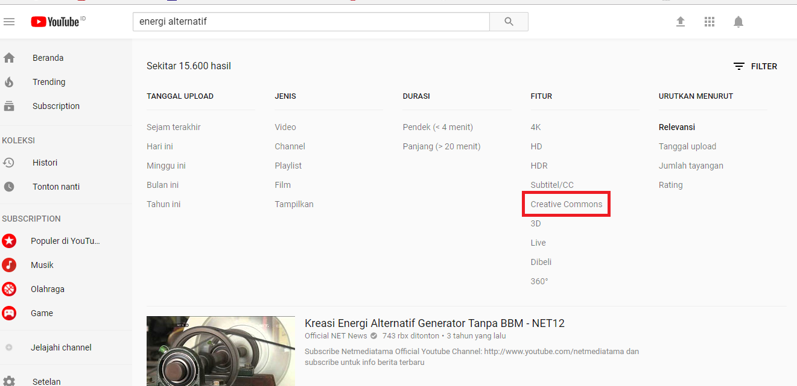

Panduan Mencari Konten Video Berlisensi Creative Commons di Situs Web Youtube
Salah satu bentuk konten terbuka selain teks, suara, dan gambar ialah konten video. Situs web Youtube merupakan salah satu tempat untuk menemukan berbagai macam video yang termasuk dalam kategori konten terbuka.

Youtube Logo oleh Andrew Perri, CC BY 2.0.,flickr.
Bagaimana cara membedakannya?
Tidak semua konten video dapat Anda gunakan sesuka hati. Karena terdapat konten video yang menerapkan prinsip atau ketentuan “All Rights Reserved” atau “Seluruh Hak Dipertahankan”. Konten video yang menerapkan prinsip atau ketentuan ini mewajibkan Anda sebagai pengguna konten video untuk meminta izin langsung pada pencipta atau pemegang hak cipta konten video dalam setiap penggunaan. Penggunaan yang dimaksud ialah seperti pengunduhan konten video, penggandaan atau penyebaran konten video, pengubahan atau penggubahan atau pembuatan ciptaan turunan dari konten video, baik untuk kepentingan komersial dan tidak komersial. Jika ketentuan atau prinsip tersebut tidak dilaksanakan dalam aktivitas penggunaan, secara prinsip perbuatan Anda dapat dikategorikan sebagai pelanggaran hak cipta.
Di sisi lain, terdapat juga pada situs web Youtube konten video terbuka yang beberapa hak ciptanya dipertahankan atau Some Right Reserved. Creative Commons salah satu lisensi terbuka yang menerapkan prinsip tersebut. Konten video yang menerapkan lisensi Creative Commons membolehkan Anda sebagai pengguna konten video terbuka untuk secara langsung menggunakan dan menyebarkan video dengan mengikuti ketentuan spektrum yang ada. Spektrum tersebut seperti Atribusi (BY), BerbagiSerupa (SA), NonKomersial (NC), TanpaTurunan (ND). Untuk mengetahui ketentuan tersebut, Anda dapat melihat pilihan lisensi Creative Commons yang diterapkan pada konten video terbuka tersebut.
Dari 4 spektrum tersebut, kemudian dirangkai menjadi 6 pilihan lisensi Creative Commons yang dapat diterapkan pada ciptaan yakni: Creative Commons Atribusi (CC BY), Creative Commons Atribusi BerbagiSerupa (CC-BY SA), Creative Commons Atribusi NonKomersial (CC-BY-NC), Creative Commons Atribusi TanpaTurunan (CC-BY-ND), Creative Commons Atribusi NonKomersial BerbagiSerupa (CC-BY-NC-SA),Creative Commons Atribusi NonKomersial TanpaTurunan (CC-BY-NC-ND). Dengan memahami pilihan lisensi Creative Commons yang diterapkan maka, Anda dapat mengetahui hal apa saja yang dapat Anda lakukan terhadap konten video terbuka tersebut.
Berikut ini adalah petunjuk untuk mencari konten video terbuka berlisensi Creative Commons di situs web Youtube.
Tahap #1
Masukan kata kunci konten video yang ingin dicari pada situs web Youtube. Lalu, pilih fitur penyaringan.
Tahap #2 Pilih fitur penyaringan. Maka akan muncul pilihan untuk menyaring video berdasarkan lisensi.

Kemudian akan memunculkan video berlisensi CC saja.

Tahap #3
Untuk mengetahui ketentuan lisensi Creative Commons apa yang diterapkan pada video tersebut, Anda dapat menemukannya di bagian keterangan video.
Pada contoh video di atas, Anda dapat lihat bahwa video tersebut menerapkan lisensi Creative Comons Atribusi (CC BY) yang mana:
Anda diizinkan:
Berbagi: Menyalin dan menyebarluaskan ciptaan. Adaptasi: Mengubah, menggubah, dan membuat ciptaan turunan dari suatu ciptaan.
Dengan catatan:
Atribusi: mencatumkan nama yang sesuai, mencantumkan tautan terhadap lisensi, dan menunjukan perubahan yang dibuat.
Untuk mengetahui penjelasan lebih lanjut mengenai penerapan lisensi ini, Anda dapat klik tautan lisensi tersebut yang nantinya akan muncul tampilan seperti gambar di bawah

Demikian penjelasan cara menemukan video berlisensi CC di situs web Youtube, selamat mencari!
Tags:
Oleh:
9 Feb 2018Kategori:
Berita Terbaru
- Lokakarya Hak Cipta dan Lisensi Creative Commons di Pekanbaru
- Pengumuman Resmi: Hasil Akhir Training of Trainers Creative Commons Indonesia
- Literatur tentang Model Bisnis Terbuka "Made With CC"
- Data dan Artikel Ilmiah Terbuka dari PLOS!
- Konten Format Model 3 Dimensi Berilsensi CC di Platform Sketchfab